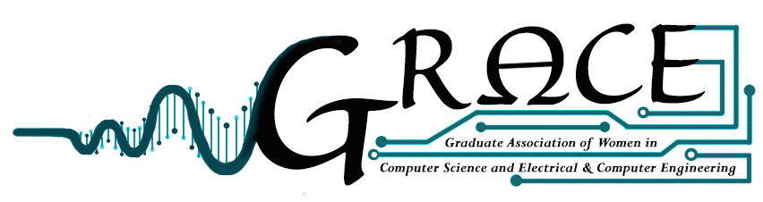

|  |
Graduate Association of Women in Computer Science & Electrical and Computer Engineering at The Johns Hopkins University (JHU)
Here are some resources and information for people looking for additional communites, or looking to learn more.
This is not an endorsement of any organization or idea, but rather a starting place for learning more.
National Center for Women & Information Technology Fact Sheet
Women in Computer Science (WiCS)
Association for Computing Machinery's Council on Women in Computing
“Why do women leave engineering”
“Smashing the Silicon Valley patriarchy: anti-Lean In strategy puts onus on men”
“When Talking About Bias Backfires: Adam Grant and Sheryl Sandberg on Discrimination at Work”
“She Wanted to Do Her Research. He Wanted to Talk ‘Feelings.’”
“Why women leave tech: It’s the culture, not because ‘math is hard’”
“How to attract female engineers”
“What really keeps women out of tech”
“Report: Disturbing drop in women in the computing field”
“Why aren’t women staying in computer science?”
Inspiring the Next Generation of Female Engineers – Debbie Sterling (GoldieBlox)
Teach Girls Bravery, not Perfection – Reshma Saujani (Girls Who Code)
Why do we have too few women leaders? – Sheryl Sandberg – Facebook CEO
Growing up in Stem as a girl – Cassidy Williams – works at Venmo